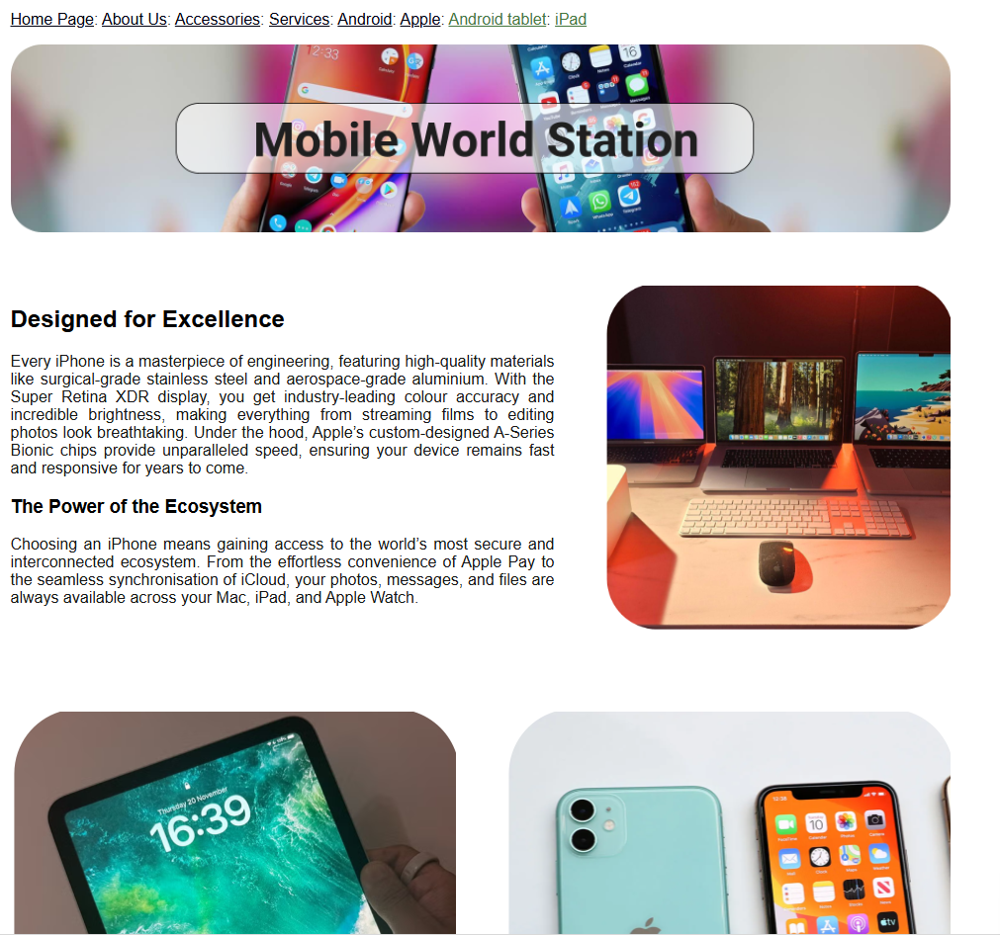

Home Page
Unit 1
Unit 2
Unit 8
Unit 13
Unit 13 Information
Unit 14
Unit 14 Information

With the internet being central to how most organisations and individuals communicate and do business, the creation and maintenance of websites is an important job role. There is a strong demand in the job market for web developers with appropriate technical and creative skills. For instance, a web-developer is a technical role involved with designing and developing websites, a content manager is responsible for keeping a website up to date and a search engine optimisation specialist encourages user traffic from internet search engines to specific websites. In this unit, you will investigate the features and uses of websites by exploring what they are and how their integrated components and applications interact with each other.
You will also learn how to design, develop and test a website for a brief. Once this is completed you will review your website, having obtained feedback from others.